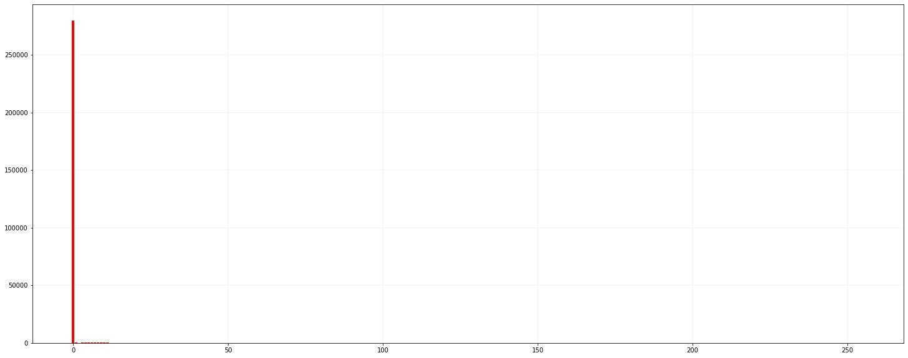

!ls
Histogram and RoI.ipynb axon02.tif test.jpg
Question 2.1 .ipynb cell_nucleus.tif
axon01.tif roi.tif
from PIL import Image
import numpy as np
from PIL import ImageOps
import matplotlib.pyplot as plt
# 打开图片并转换成灰度图
im = Image.open('axon01.tif').convert('L')
# 反转颜色
im = ImageOps.invert(im)
# display in macOS /Applications/Preview.app
# im.show()
# display in Jupyter Notebook
im

# 将灰度图片转换为 Numpy Array
im2array = np.array(im)
im2array.shape
(204, 1392)
# 将矩阵转化为向量
im2array = im2array.flatten()
# 204*1392 = 283968
len(im2array)
283968
# 统计灰度值频率
freq = [0]*256
for i in range(len(im2array)):
freq[im2array[i]] += 1
# 绘制灰度频率直方图
plt.figure(figsize=(25,10))
for i in range(0, 256):
plt.bar(i, freq[i], color='r')
plt.grid(color='gray', linewidth=0.1)

# 左上角坐标(0,0)，右下角下标(100,100)
# 裁剪出 100*100 的区域
box = (0, 0, 100, 100)
region = im.crop(box)
# 保存
region.save('roi.tif')
# 读取保存的 RoI
roi_im = Image.open('./roi.tif')
roi_im.size
(100, 100)
# 不转换为灰度图片
im = Image.open('axon01.tif')
im2array = np.array(im)
im2array = im2array.flatten()
# 统计像素值对应的像素个数
hist = [0] * (np.max(im2array)+1)
for i in range(0, len(im2array)):
hist[im2array[i]] += 1
# 绘制直方图
plt.figure(figsize=(25,10))
for i in range(0, np.max(im2array)):
plt.bar(i, hist[i], color='r')
plt.grid(color='gray', linewidth=0.1)
使用 Pillow 库绘制直方图
# 求[0,255]像素频率
histogram = im.histogram()
# 这个分布符合直觉，大部分都是黑色
print(histogram)
[3341, 138883, 751, 581, 499, 536, 582, 11, 645, 687, 717, 774, 800, 895, 946, 1071, 1367, 6, 1131, 1178, 1212, 1256, 1384, 1407, 1491, 1548, 1649, 5, 1726, 1760, 1855, 1869, 1982, 2007, 1993, 2027, 2069, 3, 2161, 2230, 2316, 2194, 2337, 2293, 2304, 2316, 2427, 6, 2474, 2341, 2359, 2380, 2380, 2301, 3120, 2300, 2175, 1, 2208, 2151, 2059, 2089, 2068, 1994, 1891, 1957, 1775, 3, 1753, 1725, 1676, 1718, 1527, 1527, 1490, 1361, 1281, 4, 1718, 1254, 1101, 1092, 1027, 974, 894, 896, 796, 3, 820, 727, 720, 650, 670, 585, 548, 498, 487, 1, 442, 400, 387, 335, 339, 345, 293, 279, 220, 4, 235, 224, 227, 189, 196, 173, 165, 244, 147, 3, 118, 113, 109, 109, 109, 110, 98, 74, 76, 2, 75, 77, 74, 69, 73, 57, 75, 67, 56, 2, 57, 44, 63, 57, 47, 36, 38, 35, 40, 1, 43, 28, 41, 29, 34, 34, 26, 33, 21, 1, 35, 32, 8, 22, 38, 19, 34, 32, 33, 0, 20, 22, 10, 26, 16, 19, 11, 21, 12, 1, 23, 12, 29, 20, 10, 13, 7, 11, 19, 1, 18, 14, 6, 18, 13, 13, 9, 14, 10, 2, 10, 11, 13, 12, 10, 9, 11, 14, 4, 1, 15, 13, 12, 15, 10, 3, 11, 9, 9, 4, 14, 14, 15, 17, 16, 15, 19, 18, 16, 15, 19, 25, 34, 35, 32, 9, 45, 49, 54, 47, 65, 85, 101, 108, 92, 5, 102, 149, 141, 157, 185, 201, 207, 222, 275, 6, 318, 297]
# 最大值 138883 表示有 138883 个值为 1的像素
max(histogram)
138883
for i, value in enumerate(im.histogram()):
print(i, value)
0 3341
1 138883
2 751
3 581
4 499
5 536
6 582
7 11
8 645
9 687
10 717
11 774
12 800
13 895
14 946
15 1071
16 1367
17 6
18 1131
19 1178
20 1212
21 1256
22 1384
23 1407
24 1491
25 1548
26 1649
27 5
28 1726
29 1760
30 1855
31 1869
32 1982
33 2007
34 1993
35 2027
36 2069
37 3
38 2161
39 2230
40 2316
41 2194
42 2337
43 2293
44 2304
45 2316
46 2427
47 6
48 2474
49 2341
50 2359
51 2380
52 2380
53 2301
54 3120
55 2300
56 2175
57 1
58 2208
59 2151
60 2059
61 2089
62 2068
63 1994
64 1891
65 1957
66 1775
67 3
68 1753
69 1725
70 1676
71 1718
72 1527
73 1527
74 1490
75 1361
76 1281
77 4
78 1718
79 1254
80 1101
81 1092
82 1027
83 974
84 894
85 896
86 796
87 3
88 820
89 727
90 720
91 650
92 670
93 585
94 548
95 498
96 487
97 1
98 442
99 400
100 387
101 335
102 339
103 345
104 293
105 279
106 220
107 4
108 235
109 224
110 227
111 189
112 196
113 173
114 165
115 244
116 147
117 3
118 118
119 113
120 109
121 109
122 109
123 110
124 98
125 74
126 76
127 2
128 75
129 77
130 74
131 69
132 73
133 57
134 75
135 67
136 56
137 2
138 57
139 44
140 63
141 57
142 47
143 36
144 38
145 35
146 40
147 1
148 43
149 28
150 41
151 29
152 34
153 34
154 26
155 33
156 21
157 1
158 35
159 32
160 8
161 22
162 38
163 19
164 34
165 32
166 33
167 0
168 20
169 22
170 10
171 26
172 16
173 19
174 11
175 21
176 12
177 1
178 23
179 12
180 29
181 20
182 10
183 13
184 7
185 11
186 19
187 1
188 18
189 14
190 6
191 18
192 13
193 13
194 9
195 14
196 10
197 2
198 10
199 11
200 13
201 12
202 10
203 9
204 11
205 14
206 4
207 1
208 15
209 13
210 12
211 15
212 10
213 3
214 11
215 9
216 9
217 4
218 14
219 14
220 15
221 17
222 16
223 15
224 19
225 18
226 16
227 15
228 19
229 25
230 34
231 35
232 32
233 9
234 45
235 49
236 54
237 47
238 65
239 85
240 101
241 108
242 92
243 5
244 102
245 149
246 141
247 157
248 185
249 201
250 207
251 222
252 275
253 6
254 318
255 297
# 像素总数 283968 = 204*1392
np.sum(histogram)
283968
# 灰度级在 [0,255]
len(histogram)
256
plt.figure(figsize=(50,30))
for i in range(0, 256):
plt.bar(i, histogram[i], color='r')
plt.grid(color='gray', linewidth=0.1)